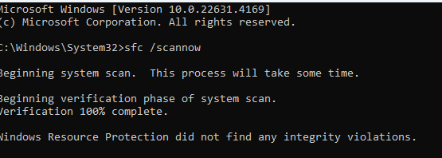
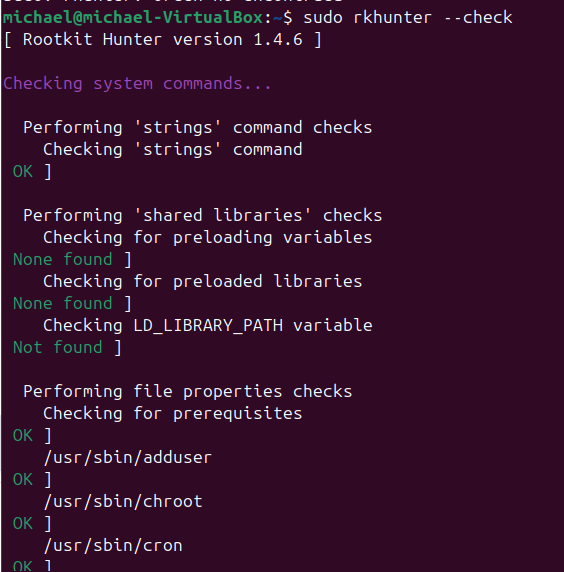

EJERCICIOS CONCEPTOS BÁSICOS DE SEGURIDAD INFORMÁTICA
Integridad de datos MD5sum
Comprobación de los archivos "FranciscoGoya" y "saludo"

¿Qué evitaremos usando esta comprobación de integridad de datos en el fichero /etc/passwd?
Evitaríamos accesos no autorizados, podríamos saber si el archivo ha sido alterado o si ha habido alteraciones maliciosas. Nos permitirá detectar modificaciones que se hayan hecho en el archivo.
¿Cómo comprobarías todos los días que los siguientes archivos no han sido modificados?
- /etc/passwd: con el comando md5sum comprobaríamos si el archivo ha sido modificado.
- /bin/bash: con el comando md5sum.
- Un archivo cualquiera de tu directorio personal: con el comando md5sum.
Indicar pros y contras de desactivar los USB de los ordenadores de los empleados
¿Qué alternativas podemos ofrecer al trabajador para sacar la información del equipo?
- PROS de desactivar los USB
- Prevención contra virus.
- Protección de nuestros datos.
- Protección contra uso no autorizado.
- CONTRAS de desactivar los USB
- El uso de periféricos: la mayoría de las computadoras utilizan mouse y teclados conectados por USB; es lo más habitual que se puede encontrar.
- En el gaming, un teclado o un mouse inalámbrico te darían más retardo de respuesta que uno que se conecte al USB del ordenador; en un juego se busca que los periféricos tengan el menor tiempo de respuesta posible.
- La instalación de un sistema operativo en nuestro ordenador no la podríamos hacer sin un USB.
- Alternativas para sacar la información del equipo:
- Almacenar la información en la nube, por ejemplo, Google Drive, entre otros muchos que ofrecen un espacio limitado y gratuito.
- Crear una red compartida de archivos; esto se puede hacer desde el explorador de archivos en el caso de Windows.
Aunque un usuario tenga privilegios limitados en una máquina, ¿todavía es un peligro potencial?
No, porque ya no tiene privilegios para descargar o instalar software sospechoso.
¿Resulta totalmente fiable utilizar las aplicaciones descargadas de Google Play?
No, porque diversas aplicaciones logran pasar los sistemas de seguridad y corremos el riesgo de infectarnos con algún virus. Siempre que queramos instalarnos una
aplicación, hay que fijarnos en los comentarios y en la reputación que tenga dicha aplicación, que nos dirán si es fiable o no.
¿Cómo detectarías un ataque DoS? ¿Qué harías para defenderte?
- Con el monitoreo del tráfico de red, utilizaría herramientas como Wireshark.
- Implementando cortafuegos para la detección y rechazo de las peticiones.
Realiza una comprobación de la integridad de archivos del sistema con
Windows. Utiliza el comando sfc. Lee la documentación que hay en el índice del curso.
Debes añadir las capturas de pantalla.

Realiza lo mismo con Linux utilizando el comando rkhunter. Debes añadir las
capturas de pantalla.

Busca y detecta si hay rootkits en tu sistema Linux con la herramienta chkrootkit
de Linux. Debes añadir las capturas de pantalla.
Piensa en técnicas para:
- Robar la contraseña de correo de tu compañero de clase. Con una técnica de phishing que consiste en crear una interfaz de autenticación falsa que imita a la original de la página y hacer que la víctima introduzca los datos.
- Robar el examen que tienes mañana, que está en el disco duro del profesor. Payloads, que consiste en insertar una USB en su ordenador, que contiene un código malicioso y que se cree una puerta trasera para que yo pueda tener acceso a sus documentos
- Robar la contraseña a tu vecino que tiene WiFi. Diccionario y ataques de fuerza bruta consiste en utilizar una lista de contraseñas para lograr cifrar la contraseña.
- Aumentar tu número de cuenta un cero a la derecha. Diccionario y fuerza bruta consiste en probar múltiples combinaciones con el diccionario.
- Para estropear los datos del disco duro de tu jefe, que está en la red de tu empresa, por no pagarte las horas extra, malware: introducir un malware mediante un USB que contiene un virus el cual va a infectar todo el dispositivo
Piensa en mecanismos de defensa para las siguientes amenazas
- Incendios:
- Salidas de emergencia
- Señalización de los extintores
- Sensores de humo
- Sistema de rociadores automáticos diseñados para detectar el calor y activar el suministro de agua
- Inundaciones:
- Ubicar los equipos en una zona segura, en áreas elevadas
- Colocarlos lejos de tuberías
- Sensores para detectar agua y activar alarmas
- Robos:
- Instalar cámaras de seguridad
- Poner alarmas de seguridad
- Control de acceso físico
- Ingreso con credenciales a los dispositivos
- Desastres naturales:
- Hacer copias de seguridad de manera constante
- Tener servidores en otra ciudad o país para recuperación
- Apagones:
- Instalar un sistema de alimentación ininterrumpida (SAI)